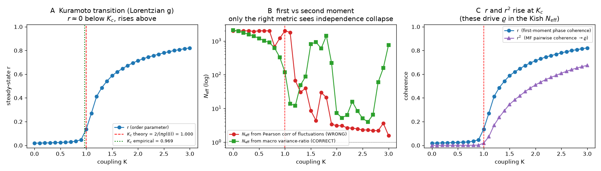

Each mechanism in the framework is one piece of mean-field / control theory. This page states every equation, says what each symbol means in plain language, flags the four places where a naive version is wrong, and hands you a slider to move. The sliders run the same primitives the paper verifies; they demonstrate internal consistency, never empirical proof. For empirical contact, see Tests & data.
| # | Mechanism | The core equation |
|---|---|---|
| 1 | Attention conservation | continuity equation: $\partial_t \rho + \nabla\!\cdot J = 0$ |
| 2 | Belief as a drift field | $J = \rho v - D\nabla\rho + \rho\, b$ |
| 3 | Near-decomposability & Neff | variance-ratio $N_{\mathrm{eff}} = \mathrm{Var}(x_k)/\mathrm{Var}(\bar x)$ |
| 4 | Criticality, Kc & the skill horizon | Kuramoto order $r$; $\tau^\* \propto N_{\mathrm{eff}}/K$ |
| 5 | Reflexivity & MFG fixed points | $\rho^\* = T(\rho^\*)$, Lasry–Lions equilibrium |
| 6 | Observation & assimilation | EnKF update + normalized-innovation monitor |
| 7 | The engine turned on AI | capture → $N_{\mathrm{eff}}$ collapse → phase flip |
The first repair to "society has no conservation law." Total collective attention over a population is, to first order, a fixed budget: a panic creates no new hours in the day. What looks like belief appearing from nowhere is attention being reallocated. Write $\rho(x,t)$ for the density of attention over topics $x$. It obeys a continuity equation.
Where: ρ is the attention density (a probability measure that integrates to 1); J is the attention flux (how attention flows between topics); s is a small source/sink term for genuine entry and exit of attention into the system. With $s\!\approx\!0$ the integral of $\rho$ is invariant: attention moves, it is not created.
This is the Fokker–Planck / Toscani "conserved normalized measure" reading. Correction 1
What the naive version got wrong: a softmax over topic scores is not a conservation law — it is a normalization applied at each instant, which is a category error. The conserved object is a probability measure transported by a continuity equation, not a softmax output. The distinction matters because only the transport reading gives you fluxes, drift, and the SVB-style 48-hour reallocation dynamics.
Twelve topics share a fixed attention budget on a ring. A belief drift biases flow toward topic #7 (cyan). Move the drift; watch attention concentrate while the total stays pinned at exactly 1.000000.
Why not just call belief a kind of attention? Because belief fails the sign test: you can attend maximally to what you reject. So belief is not a conserved sub-measure — it is a drift imposed on attention's transport. It enters the flux $J$, not the density $\rho$.
Where: v is a baseline advective velocity (where attention is already heading); D is a diffusion constant (attention spreads to neighbouring topics); b is the belief drift field — a direction that biases the flux. Valence (approve vs reject) rides on top of all this as a separate, non-conserved order parameter, the magnetization analogue.
Reading it: high $\rho$ with $b$ pointing inward is legitimacy; high $\rho$ with $b$ pointing outward is crisis — a bank at 48-hour run intensity. Demo A above is exactly this equation with $v=0$, a small $D$, and a tunable $b$ toward one topic.
§ Honest: the advective and belief terms are an exact directed transport; the diffusion term conserves only the integral of $\rho$, not a per-unit ledger. The continuity equation is a statement about the total, not a receipt for each unit of attention.
The second repair, to "agents are correlated, so the law of large numbers fails." Society is nearly decomposable (Herbert Simon): dense interaction inside a community, sparse between. So you do not average over people — you average over blocks, and the effective number of independent units is $N_{\mathrm{eff}}$, which can be far below both the population and the block count $K$.
Where: $x_k(t)$ is the activity of block $k$ over time, $\bar x(t)=\frac1K\sum_k x_k(t)$ is the population mean. If the $K$ blocks are independent, the mean's variance is $1/K$ of a single block's, so $N_{\mathrm{eff}}\!\approx\!K$. If they synchronize, $\bar x$ swings as hard as any single block and $N_{\mathrm{eff}}\!\to\!1$: the law of large numbers has evaporated.
There is a closed-form Kish/Pearson version, $N_{\mathrm{eff}}=K/\big(1+(K-1)\bar\rho\big)$, where $\bar\rho$ is the mean cross-block correlation. Correction 2
What the naive version got wrong: estimating $\bar\rho$ from the Pearson correlation of fluctuations badly understates synchronization — in the verified E4 simulation it stays near 64 while the system collapses to 1. The macro variance-ratio is the estimator that actually tracks the collapse (61 → 1). The Kish form is shown in red on the demo precisely so you can watch it mislead.
48 coupled blocks. Raise the coupling $W$ and watch synchrony $S$ rise, the effective number of independent blocks fall toward 1, and the skill horizon $\tau^\*$ collapse. The red dotted line is the misleading Pearson estimator — note how it barely moves while the system goes critical.
The collapse in Demo B is a phase transition. Past a critical coupling $K_c$ the blocks lock into a single mode; below it they are effectively independent. The same crossing controls how far ahead you can predict.
Where: $r\in[0,1]$ is the synchronization order parameter (0 = incoherent, 1 = fully locked); $\theta_j$ are the phases of the coupled units; $K_c$ is the critical coupling at which synchronization switches on, set by the spread $g(0)$ of natural frequencies. "World Cup" (many independent conversations) is the sub-critical phase; "Pluribus" (one locked conversation) is super-critical. They are one transition with two names.
The verified check: the simulation recovers $K_c \approx 0.969$ against a theoretical $1.0$ (3.1% error), instantiating the first-vs-second-moment machinery that the $N_{\mathrm{eff}}$ collapse rides on.
Where: $\tau^\*$ is the forecast skill horizon — how far ahead an ensemble forecast stays useful before perturbations diverge. As $N_{\mathrm{eff}}\to 1$ near the transition, $\tau^\*\to 0$: the system becomes unpredictable exactly when the stakes are highest. This is not a failure of compute; it is the structure. The right move is to switch the objective from predicting which branch to forecasting that a transition is near — and, only under governance, to use the same divergent susceptibility for control.

§ Early-warning is valid only for slow B-tipping. Rising variance and synchrony precede bifurcation tipping — but the prosecutor's fallacy applies (a warning is not a guarantee), and noise-induced (N-) and rate-induced (R-) tipping have no warning at all. The blind spots are real and are reported as such; the empirical bifurcation-mix test (Tests) found most real cascades are sudden R-tipping shocks.
The third repair, to "the forecast is an input to the system." A social prediction, once published and acted upon, changes the outcome. The resolution: only publish fixed points — predictions that remain true after everyone best-responds to them. These are the equilibria of a mean-field game.
Where: $T$ is the prediction–reaction map — it takes a believed distribution $\rho$, lets every agent best-respond, and returns the realized distribution. A fixed point $\rho^\*$ is a forecast that reproduces itself: publishable because it is self-consistent. This is the Lasry–Lions mean-field-game equilibrium; it pairs a backward Hamilton–Jacobi–Bellman equation (each agent optimizing) with a forward Fokker–Planck equation (the crowd it produces).
Two regimes. Correction 4 In the monotone (congestion) regime — agents avoid crowds — the fixed point is unique and the forecast is publishable. In the imitative regime — agents chase crowds — the map is bistable: a "run" fixed point and a "no-run" fixed point with an unstable threshold between them. Bistability is exactly where open-loop forecasting fails and control takes over. A unique publishable forecast exists only in the monotone regime.
The reaction map $T(f)$ for a bank run: given an expected run-fraction $f$, how many actually run? Fixed points are where $T(f)=f$. Raise the deposit guarantee $g$ to kill the run; lower the imitative coupling $c$ to expose bistability.
The engine is a state-space system: it estimates a hidden social state, assimilates noisy observations, runs a perturbed ensemble forward, and reports its spread plus an honest skill horizon. The load-bearing piece is the self-diagnosis — a monitor that fires when reality has left the model (the "Mule" / out-of-distribution event).
Where: $x_f$ is the forecast (prior) state, $y$ the observation, $H$ the observation operator, $K$ the Kalman gain that optimally weights prior against data, and $x_a$ the updated (posterior) estimate. The second quantity $z_t$ is the normalized innovation: the surprise of each observation in units of its own predicted standard deviation $\sqrt{S_t}$. When $|z_t|$ blows past its expected range, the model is being falsified in real time — no future information required.
What the data showed: run strictly causally on r/AskEconomics monthly activity, the filter beat climatology and was best-calibrated, but did not beat a persistence (last-value) baseline — an honest negative. The win was the monitor firing at $z=-3.33$ on a real April-2025 regime break. ▸ the full EnKF test
A forward projection of the same machinery applied to AI. Capability growth and falling cost drive attention capture; cognition routes through ever-fewer model lineages; cross-human correlation rises and the effective number of independent decision-communities $N_{\mathrm{eff}}$ collapses. The same smooth-vs-critical boundary that governs every panel above decides whether psychohistory still holds. The robust output is the ordering of events, never a date.
This phase boundary is the same smooth-vs-critical boundary as Demo B: sub-critical = many adversarial blocks (the LLN holds, forecasting works); super-critical = Neff→1 (the recovered LLN evaporates, psychohistory fails).
§ The OOD-shock inset shows the derived Second Foundation result: an open-loop model diverges after a regime break, while a standing detect-and-correct loop stays bounded — and lineage diversity (higher $L_{\mathrm{eff}}$, lower $\rho_{\mathrm{model}}$) partially substitutes for the central corrector. A monoculture needs the controller; diversity is partly self-healing.